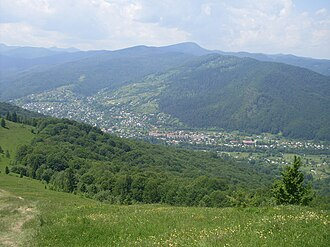

Загальна відстань: близько 350 км зі Львова

Загальна відстань: близько 180–220 км зі Львова
Час: цілий день (виїзд о 6–7 ранку)
- Яремче
- Водоспад Пробій
- Стежка Довбуша
- Сувенірний ринок і гуцульська кухня
Плюси:
Один із найефектніших одноденних маршрутів.
Хороша інфраструктура.
Не потребує складних походів.
🚗 Прокласти маршрут у Google Maps